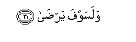

Sacred Texts Islam Index
Hypertext Qur'an Unicode Palmer Pickthall Yusuf Ali English Rodwell
Sūra XCII.: Lail, or The Night. Index
Previous Next

The Holy Quran, tr. by Yusuf Ali, [1934], at sacred-texts.com
Sūra XCII.: Lail, or The Night.
Section 1
1. By the Night as it
Conceals (the light);
2. By the Day as it
Appears in glory;
3. Wama khalaqa alththakara waal-ontha
3. By (the mystery of)
The creation of male
And female;—
4. Verily, (the ends) ye
Strive for are diverse.
5. So he who gives
(In charity) and fears (God),
6. And (in all sincerity)
Testifies to the Best,—
7. We will indeed
Make smooth for him
The path to Bliss,
8. Waamma man bakhila waistaghna
8. But he who is
A greedy miser
And thinks himself
Self-sufficient,
9. And gives the lie
To the Best,—
10. We will indeed
Make smooth for him
The Path to Misery;
11. Wama yughnee AAanhu maluhu itha taradda
11. Nor will his wealth
Profit him when he
Falls headlong (into the Pit).
12. Verily We take
Upon Ourselves to guide,
13. Wa-inna lana lal-akhirata waal-oola
13. And verily unto Us
(Belong) the End
And the Beginning,
14. Faanthartukum naran talaththa
14. Therefore do I warn you
Of a Fire blazing fiercely;
15. None shall reach it
But those most unfortunate ones
16. Allathee kaththaba watawalla
16. Who give the lie to Truth
And turn their backs.
17. But those most devoted
To God shall be
Removed far from it,—
18. Allathee yu/tee malahu yatazakka
18. Those who spend their wealth
For increase in self-purification,
19. Wama li-ahadin AAindahu min niAAmatin tujza
19. And have in their minds
No favour from anyone
For which a reward
Is expected in return,
20. Illa ibtighaa wajhi rabbihi al-aAAla
20. But only the desire
To seek for the Countenance
Of their Lord Most High;

21. And soon will they
Attain (complete) satisfaction.